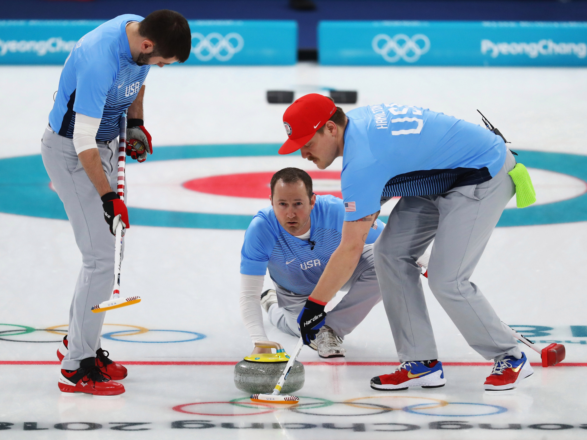
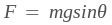

Friction is the force that counteracts the applied force on an object in the opposite direction of the movement. It always occurs between two or more different systems being in contact with one another and is caused by the electromagnetic attraction between the charged particles of the objects. There are two main types of friction: static friction and kinetic friction.
Static friction is the force that prevents two stationary surfaces in contact moving away from each other. The static friction force also allows you to determine the amount of force you require to make an object move in the opposite direction. For instance, let's say that the mass of a Toyota Camry sedan is 1000kg, while the surface it is on, dry asphalt, induces a static friction force of 6867 N [backwards], which causes the car to stay immobile. You would require that amount of opposite force (6867 N [forwards]) or more to push the car forward! If the surface were ice, you would require much less force to push the car as ice creates less friction.

Kinetic friction occurs between two different surfaces and counteracts the object in motion. It is usually weaker in magnitude than the static friction force of the same surface. Static friction abruptly stops the motion of multiple surfaces, while kinetic friction gradually slows down the object in motion. For instance, without curling athletes to scrub the ice in front a curling stone, the stone would slide far beyond its destined target. The scrubbing of the ice allows it to create a greater kinetic friction force onto the stone, constantly diminishing its speed and decreasing the total displacement it can travel to land on its target. However, too much kinetic friction could cause the object to not reach its target at all, so curling athletes must be wary of this aspect.
Each surface has a unique roughness, which is measured with the coefficient of friction (μ). The friction coefficient is calculated by taking the ratio of the friction force to the ratio of the normal force. The kinetic friction force is calculated by substituting in the kinetic friction coefficient and rearranging the equation:

The formula for static friction is slightly different, since the static friction force changes depending on the amount of applied force onto an object. However, each system interaction has their own limit of the static friction force, which we call the maximum static friction force. For instance, if the maximum static friction force of a box on concrete was 100 N [backwards], any force in the forwards direction less than 100 N in magnitude would experience a static friction force of the same magnitude but in the opposite direction (e.g. applied force = 50 N [forwards], static friction force = 50 N [backwards]). This is the variable we try to solve for in our equation when we substitute the static friction coefficient:

What would happen if the object was on an inclined plane with, say, an angle of 30 degrees?

Our equation doesn't change at all, but the way we calculate our normal force is different. Many people make the misconception that the normal force is always opposite to the force of gravity. However, the normal force should always be perpendicular to the surface. If we rearranged the vertical gravity force vector and the normal force vector, we would obtain part of a right-angle triangle, with the gravity force vector being the hypotneuse and the normal force vector being one of the legs, adjacent to the ramp's angle. The normal force would hence be calculated as:

Gravity also affects the motion of the box along the ramp's surface. This force vector is actually the second leg of the right-angle triangle mentioned above. Therefore, it would be calculated as:
Rolling friction is a type of kinetic friction associated with circular objects such as wheels. It is the weakest type of friction, which is why rolling objects tend to stay in motion for long periods of time. When a force is applied onto a wheel, there appears a tiny static rolling friction force that holds back the rolling motion, but it is too minuscule to make an impact. There is also a static sliding friction which prevents the wheel from sliding, causing it to roll. Further resistance to this rolling motion is caused by several friction forces between the wheel and the ground.

Fluid friction involves motion resistance inside liquids and gases. It can occur when an object and a fluid move past each other, two objects are lubricated by a fluid layer in between, two fluid moving past each other, or a solid or fluid moving inside another fluid. The internal resistance of a liquid to flow is known as its viscosity, which affects the fluid friction outside or inside the fluid layer. For instance, when you push your hand inside a pool of water, you can experience the resistance of the water onto your hand caused by fluid friction.